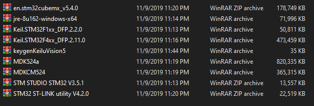
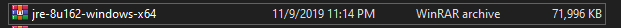

1) Phần mềm dùng lập trình

- Keil uVision5: Môi trường code
- STMStudio: Hiển thị giá trị các biến
- STM32CubeMX: Cấu hình và sinh code
- STM32 ST-LINK Utility: Nạp vi điều khiển
Link tải: Tại
đây
2) Cài đặt
Sau khi giải nén ra ta được như hình:
Cài file"jre-8u162-windows-x64" đầu tiên vì đây là file java
Sau đó cài lần lượt các file như tải các phần mềm khác:
- File đầu tiên: STM32CubeMX
- File thứ 2: Java
- File thứ 3: Thư viện STMF1
- File thứ 4: Thư viện STMF4
- File thứ 5: Tool crack Keil uVision5
- File thứ 6,7: Keil uVision5 và tools
- File thư 8: STMStudio
- File thư 8: STM32 ST-LINK Utility
Sau khi cài xong ta sẽ được 4 phần mền như hình